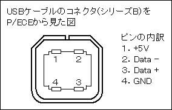
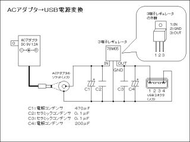

| はじめに |
| どうも、P/ECEで電子工作勉強中のまどかです。 このコーナーでは、P/ECEに隠された「拡張端子」を利用して、電子工作の勉強をしながら自作のハードでいろいろおもしろいことをやっちゃお〜というコーナーです（＾＾； そして、今回はオリジナルの電源ユニットを作ってしまおうということで、「オリジナル電源ユニット 源５郎（げんごろう）」の製作です。 なお、このページを参考にしての作業はすべて自己責任で行ってください。 |
| 作ろうと思ったきっかけ |
| この源５郎を作ろうと思ったきっかけは、一言でいうと「電池ゴミの軽減」です。 P/ECEを動作させるためには単３乾電池１本が必要で、パソコンとUSBで接続されていない限り､すぐに電池の電気がなくなって、新しい電池に交換しないといけません。 ずっとパソコンに接続していれば電池を減らさずに遊べるのですが､実際そうはいきませんよね。 そんなとき、ある言葉があたまに浮かびました。 「P/ECE用のACアダプタみないなのがあればなぁ……」 そう、同じ携帯ゲーム機であるGBでは、電池を使わなくても済むように、GB用のACアダプタが用意されています。 これと同じようなモノをP/ECEでも作れば…… これがきっかけでした。 |
| 源５郎ができるまで |
| さて、P/ECEに外部から電源を供給するためには、P/ECE側に外部電源用のコネクタが無くては話にならないのですが、みなさんもご存知のとおり、P/ECEはUSBコネクタから電源をもらうことが可能な構造になっていますよね。 実は、USBコネクタの端子は以下のような内訳になっていて､1番ピンと4番ピンから電源を供給しています。  ちなみに、1番ピンと4番ピンは電池のプラス極とマイナス極みたいなものだと思ってください。 というわけで、P/ECEはUSBコネクタから5Vの電源を得ていることがわかりました。 と、「5Vの電源を得ていることがわかりました」っていっても、電子工作初心者の方はピンと来ないですよね。 私も仕事やこの趣味の工作で色々勉強していくまでは､5Vの電源だとか､12Vの電源ラインがどうとか言われてもさっぱりで、電源なんてこの機械を動かすのに単３電池がいくついるんだっけ？ くらいの認識しかなく、5Vの電源ってどうやってつくるの？ という感じだったのですが、色々勉強していくうちに、なんとなーくわかってきました。 話を戻しますが、P/ECEを外部電源で動かすには5Vの電源が必要で、その5Vをつくるために電子工作では「３端子レギュレータ」という部品をよく使います。 この部品は、IN・GND・OUTの3本の端子を持っていて､INから入力された電圧を指定の電圧に変換して、OUTから安定した電圧供給を行うというものです。 簡単に言うと､電圧変換器ですね。 そして、この３端子レギュレータには変換後の電圧によって色々種類があり、今回は5V変換用の「78M05」という種類の３端子レギュレータを使います。 ３端子レギュレータは各社から色々な型番のものが発売されていますので、お店で「78M05の３端子レギュレータください」と言えば適当なのを売ってもらえます（＾＾： また、今回はレギュレータで5Vをつくるための素として、秋葉原の秋月電子通商などで販売されている市販のACアダプタを使用しました。 市販されているACアダプタにも色々種類があって、12V用とか9V用とかがあるのですが、レギュレータで任意の電圧を取り出す場合、入力電圧と出力電圧に差がありすぎると変換時に大量の熱が発生しますので､一般に入力電圧には「出力電圧＋2V」くらいのものを使うようです。 ですが、今回は5+2=7VのACアダプタが近くの店に売っていなかったので､その上の9Vのものを使用しました。このくらいなら特に問題はありません。 というわけで、以下に今回製作する「源５郎」の部品一覧を紹介します。 先述した３端子レギュレータ・ACアダプタの他にいろいろ部品がありますが、これらは電源ユニットを作るときにおまじないのように必要な部品だと思っておいてください（＾＾； （私もいろいろなサイトの回路図を参考に部品を選びました）
ここで示した価格は定価ではなく、私が購入した時の価格ですので、販売店によっては値段が違ってくると思いますが、だいたい2000円で全部揃います。 この部品の他にお好みで、20円のアルミ板のヒートシンクをつけても良いですね。（私はつけてみました（＾＾） さあ、後は回路図を参考に部品を基板に実装するだけです。 あ、ケース加工は結構大変ですが､ピンバイスやヤスリを駆使して頑張って穴を空けましょう（＾＾； というわけで、回路図の公開です。 （クリックすると拡大されます）  続いて、源5郎の部品一覧と完成品を写真で一気に紹介します。 （クリックすると拡大表示されます）
部品実装に関して特に難しいことはありませんが、電解コンデンサのプラスとマイナス（極性といいます）を間違えたり、３端子レギュレータを逆に付けたりしないように部品の向きには注意してくださいね。 ちなみに、セラミックコンデンサには極性がないので、足の向きは関係ないです（＾＾ |
||||||||||||||||||||||||||||||||||||||||||||||||||||||||||||
| 最後に |
| はい、「オリジナル電源ユニット 源５郎」の製作、いかがだったでしょうか。 この源５郎を使えば、P/ECEを動かすのにいちいちパソコンを立ち上げなくて済むので､電気代もお得になりますし､なんと言っても電池のゴミがでません（＾＾； ちなみに、ここだけの話ですが、この源５郎を使わなくても、ACアダプタが付属しているタイプのUSBハブを使えば、パソコン無しでP/ECEをUSB接続で駆動することができます＜知人に指摘されるまで気付きませんでした（笑 ですが、源５郎を作った方が、費用的に安くできますし､電子工作での電源周りの勉強にもってこいの題材なので､是非挑戦してみてください。 源５郎のおまけ的な使い方として、USBに接続するタイプの「USB扇風機」などもこの源５郎を使えばパソコン無しで動かすことができます。結構実用的でしょ（＾＾ また、P/ECEを真の携帯端末として利用するために、ACアダプタの代わりにラジコンなどの7.2Vバッテリをつないでも良いですね。 これは、ラジコンバッテリのコネクタをACアダプタのコネクタ変換する短いケーブルを作ればすぐできるので、これでP/ECEの長時間駆動も夢じゃない！？ というわけで、今回はここまで。 それでは、P/ECEを通じて未来のエンジニアが育つことを願いつつ､お別れです。 でわでわ〜 |